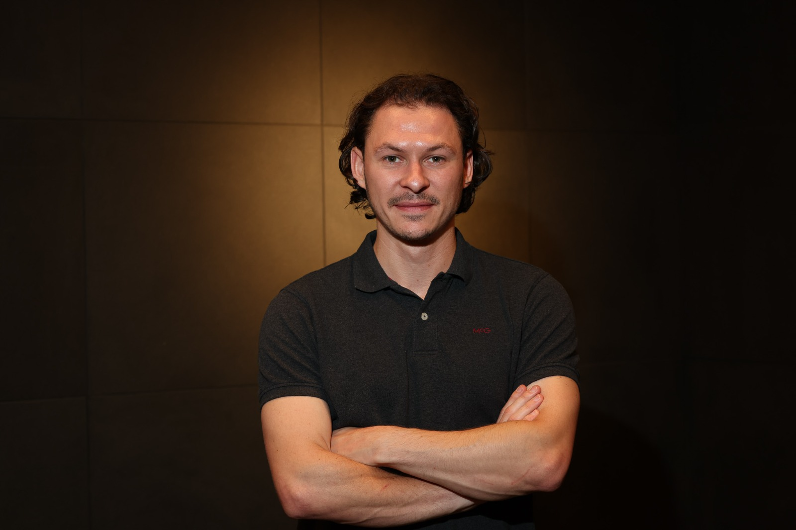

Ervaring uit de praktijk
Over Mistho
Ontstaan vanuit de praktijk
Mijn naam is Mike Hoogendam. Ik heb bij meerdere bedrijven met een productiefaciliteit in Nederland gewerkt. Daar zag ik dat de productiekwaliteit beter kon. Ik introduceerde en integreerde bij deze bedrijven een productiefaciliteit uit mijn eigen netwerk, voor onder meer metaalbewerking, behuizingen, kabelassemblages en elektronica. De kwaliteit ging omhoog en de kosten daalden.
Na deze integraties zag ik dat deze aanpak ook voor andere bedrijven waarde kon hebben. Ik onderzocht hoe zij hun productie hadden ingericht en waar kwaliteit en kosten beter in balans konden. Zo is Mistho ontstaan: bedrijven helpen hun productiekwaliteit te verhogen en tegelijk hun kosten te beheersen.
De productie vindt plaats in onze hoogwaardige productiefaciliteit in Slowakije. Hoewel de productie daar plaatsvindt, heeft u in Nederland één vast aanspreekpunt voor contact en dagelijkse afstemming.

Samenwerken met Mistho
Bespreek uw productieproject met één aanspreekpunt in Nederland.